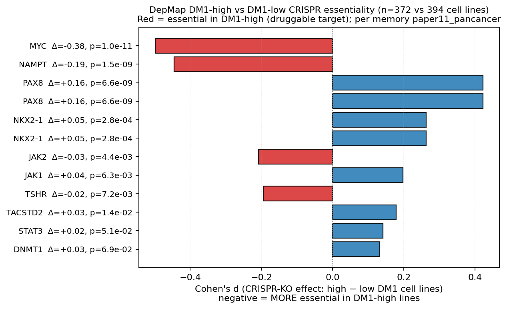
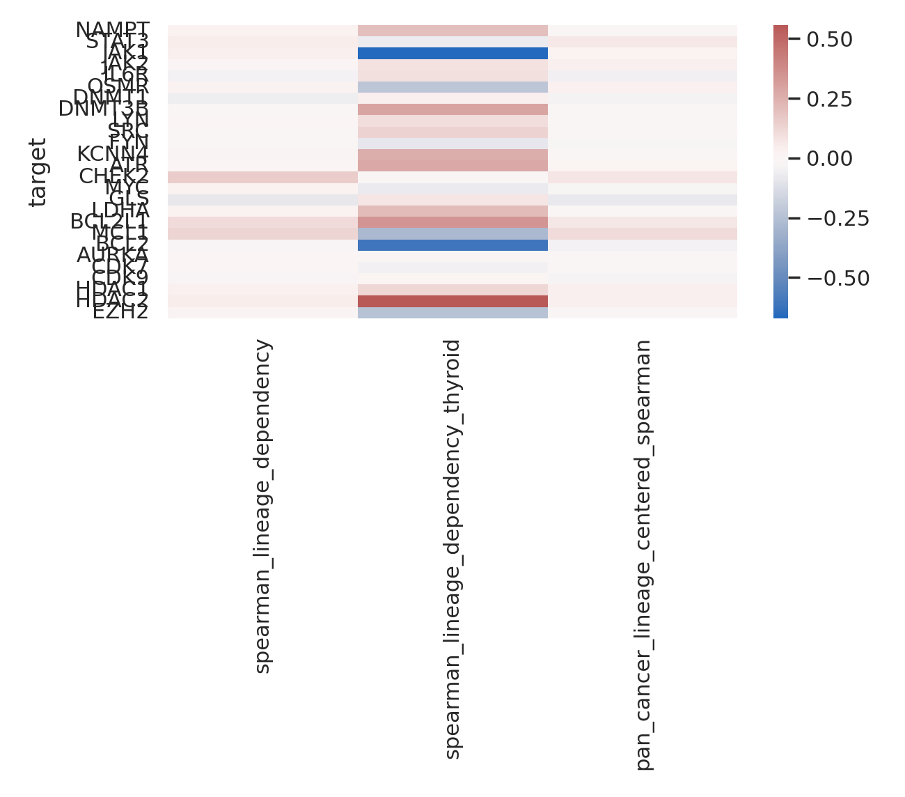

01TL;DR
Current verdict: strongest allowed claim is candidate vulnerability prioritization in DM1-high / lineage-silenced models. PRISM strongly prioritizes MAPK-axis inhibitors; DepMap prioritizes MYC/NAMPT; Paper9 prioritizes SLC1A5 > GLUD1 > GLS for wet-lab perturbation. None is validated synthetic lethality yet.
02Claim Boundary
AllowedPharmacologic vulnerability, CRISPR dependency prioritization, wet-lab perturbation roadmap, reviewer-reserve actionability.
ForbiddenValidated synthetic lethality, clinical recommendation, patient-selection biomarker, treatment-induced thyroid-gene restoration.
Safe WordingDM1-high or lineage-silenced models show public-data vulnerability signals motivating focused perturbation experiments.
03Decision Matrix
| Tier | Candidate | Context | Perturbation | Headline metrics | Claim status | Disposition | Next validation | Sources |
|---|---|---|---|---|---|---|---|---|
| T1 | DM1-high / MAPK-axis pharmacologic vulnerability | DM1-high, lineage-silenced pan-cancer cell-line state | MEK/RAF/ERK inhibitors | PRISM 1518 drugs; FDR<0.05 hits 11, canonical MAPK 7/11; top7 MAPK 7/7; AZD-0364 d=-0.594, FDR=5.88e-07; DM1 score x MAPK LFC rho=-0.236, p=3.31e-10 | Allowed: pharmacologic vulnerability / actionability reserve. Forbidden: validated synthetic lethality. | KEEP AS REVIEWER-RESERVE, NOT MAIN SYNTHETIC-LETHAL CLAIM | Matched thyroid/DM1-high models, dose-response MEK/RAF/ERK, genetic MAPK rescue or bypass, and lineage-gene restoration readout. | v15C_prism_annotated_drugs.tsv; v16_prism_enrichment_sensitivity.tsv; v16_prism_lineage_sensitivity.tsv |
| T2 | DM1-high CRISPR dependency | DM1-high vs DM1-low DepMap cell lines | MYC and NAMPT genetic perturbation; inhibitor follow-up only as separate validation | n_high=372, n_low=394; MYC d=-0.499, p=1.00e-11; NAMPT d=-0.445, p=1.53e-09 | Allowed: dependency prioritization. Forbidden: selective clinical target without pan-essentiality controls. | KEEP AS FUNCTIONAL PRIORITIZATION; MYC HAS PAN-ESSENTIAL RISK | Within-lineage matched models, CRISPRi/siRNA titration, rescue, viability plus apoptosis/colony assays, and toxicity window against lineage-high controls. | v15C_depmap_dependency_overlay.tsv; phase_D_depmap/dm1_high_low_dependency.tsv |
| T3A | Glutamine transporter vulnerability | lineage-silenced thyroid cancer model | SLC1A5 KD/KO/CRISPRi; glutamine withdrawal; V-9302/GPNA only if metadata supports | SLC1A5 dependency rho=0.102, p=5.33e-04, n=1140; pan-cancer corrected rho=0.078, p=0.008; strict thyroid n=11 NS | Allowed: wet-lab priority. Forbidden: drug-response claim without matched response data. | TOP PAPER9 WET-LAB PRIORITY | Genetic perturbation plus glutamine or alpha-ketoglutarate rescue; viability/apoptosis/colony; SLC5A5/TPO/TSHR/TG/PAX8/NKX2-1 readout. | paper9_module_dependency_associations.tsv; paper9_drug_perturbation_go_no_go.md |
| T3B | Glutamate/TCA anaplerosis vulnerability | lineage-silenced thyroid cancer model | GLUD1 KD/KO/CRISPRi; inhibitor only if specificity acceptable | GLUD1 dependency rho=0.075, p=0.011; pan-cancer corrected rho=0.062, p=0.037; strict thyroid n=11 NS | Allowed: wet-lab priority. Forbidden: inhibitor claim from weak metadata. | SECOND PAPER9 WET-LAB PRIORITY | GLUD1 perturbation with alpha-ketoglutarate/TCA rescue; OCR/ECAR; viability and lineage-gene readout. | paper9_module_dependency_associations.tsv; paper9_drug_perturbation_go_no_go.md |
| T3C | Glutaminase vulnerability | lineage-silenced thyroid cancer model | GLS KD/KO/CRISPRi; BPTES/CB-839 style pharmacology only with caveat | GLS dependency rho=0.088, p=0.003; pan-cancer corrected rho=0.081, p=0.006; strict thyroid n=11 NS | Allowed: candidate. Forbidden: headline due to weak/discordant public drug concordance. | CANDIDATE, NOT HEADLINE | Concordant genetic and pharmacologic effect with rescue; resolve BPTES/CB-839 concordance before using as main story. | paper9_module_dependency_associations.tsv; paper9_perturbation_evidence_summary.md |
| BOUNDARY | Spatial MAPK-panel test | GSE250521 thyroid Visium | None; observational spatial stress test | v16/v17 did not rescue spatial anti-correlation; 0/45 subset/adjustment tests negative in v16; full+detection residual rho ~0 in v17. | Allowed: caveat/reserve. Forbidden: mechanism support or synthetic lethality support. | USE AS HONEST NEGATIVE CAVEAT ONLY | Do not use for synthetic-lethality argument; separate from pharmacologic/CRISPR prioritization. | v16_spatial_prism_diagnostics_summary.json; v17_spatial_signal_decomposition_summary.json |
| BOUNDARY | ICI vulnerability / immune phenotype | DM1 inflamed/dedifferentiated tumor state | Immune checkpoint therapy context | Project boundary map already separates immune vulnerability from synthetic-lethal and synthetic-rescue hypotheses. | Allowed: separate Paper 3 immune-vulnerability frame. Forbidden: calling ICI response synthetic lethality. | KEEP OUT OF SYNTHETIC-LETHALITY CLAIM SET | Treat as separate Paper 3 track; do not merge with DM1 perturbation vulnerability language. | project/reports/2026_05_06_ici_vs_synthetic_lethality_boundary_map.md |
04Figures

Existing round6 figure showing DM1-high drug-sensitivity ranking.

Existing round6 figure summarizing DM1-high CRISPR dependency candidates.

Local perturbation roadmap evidence used for SLC1A5 / GLUD1 / GLS triage.

Useful caveat: spatial MAPK-panel anti-correlation was not rescued; PRISM wording was corrected.
05Wet-Lab Queue
Priority order: SLC1A5 > GLUD1 > GLS. The falsification design should pair genetic perturbation with glutamine or alpha-ketoglutarate rescue, viability/apoptosis/colony phenotypes, and thyroid-lineage readouts.
06Caveats
Spatial GSE250521 does not support a local within-spot MAPK-panel anti-correlation and should remain a caveat/reserve result. ICI vulnerability belongs to Paper 3 immune framing, not synthetic lethality. TROP2/topo-I ADC work is a separate actionability track and should not be merged into this claim set.
07Related Pages
08Sources
| Key | Path |
|---|---|
| prism | project/results/p_deconv_2026_05_08/v15C_prism_annotated_drugs.tsv |
| prism_enrich | project/results/p_deconv_2026_05_08/v16_prism_enrichment_sensitivity.tsv |
| prism_lineage | project/results/p_deconv_2026_05_08/v16_prism_lineage_sensitivity.tsv |
| depmap | project/results/p_deconv_2026_05_08/v15C_depmap_dependency_overlay.tsv |
| metabolic | project/results/p3_p9_full_execution/paper9_sprint2_metabolic/paper9_module_dependency_associations.tsv |
| paper9_gene | project/results/p3_p9_full_execution/paper9/p9_candidate_dependency_associations.tsv |
| paper9_go | project/results/paper9_perturbation_2026_05_06/paper9_drug_perturbation_go_no_go.md |
| paper9_summary | project/results/paper9_perturbation_2026_05_06/paper9_perturbation_evidence_summary.md |
Generated by project/results/p_synthetic_lethality_2026_05_09/build_synthetic_lethality_dossier.py. Live copy deployed to /var/www/papers/papers_hub_2026_05_04/paper1_synthetic_lethality_dossier.html.